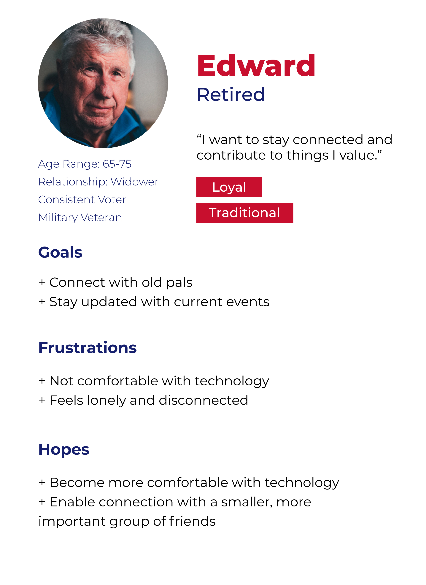
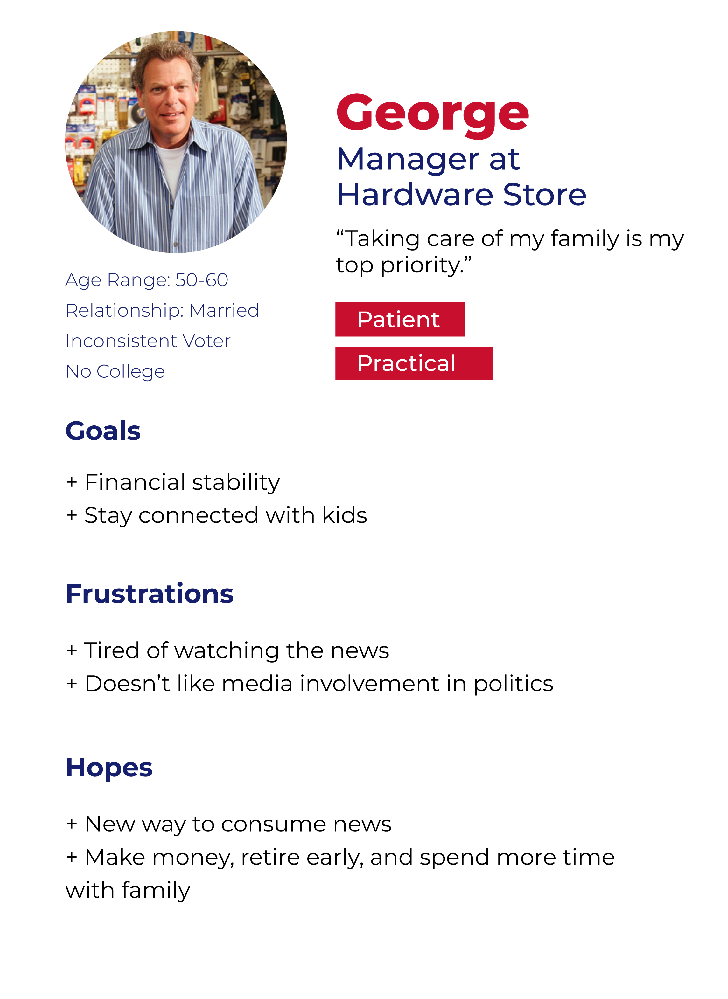
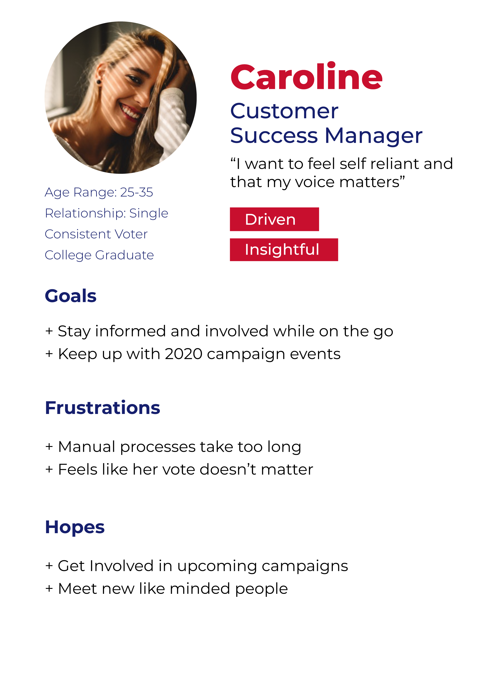
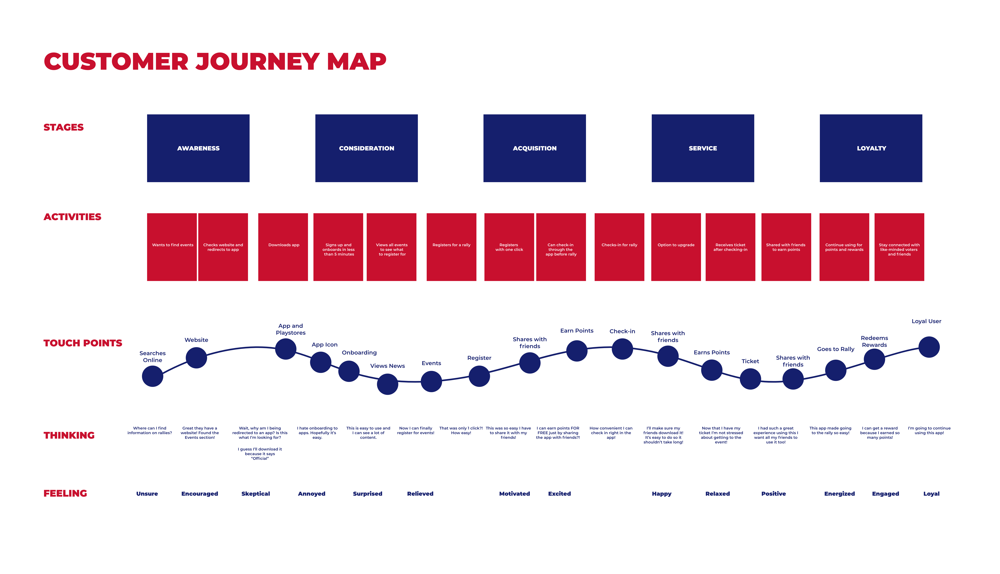
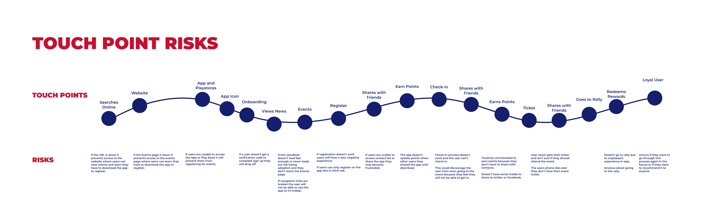
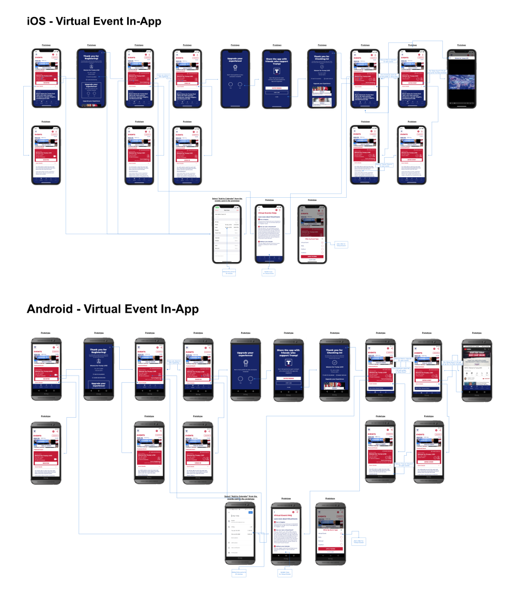

I worked as the lead designer for the Trump 2020 Campaign App. I worked closely with our project manager, developers, and QA team for this project. This app was developed at Phunware and is not a representation of my personal beliefs. As designers, we aim to be non-bias, and it was essential for me to bring that mindset to this project.
My Role
Research & Personas
Competitors & Understanding the audience
Sketching & Design System
Exploring ideas & creating a design system
Flow maps & Design
Mapping flows together & finalizing designs
Challenge
The main challenge was to create a way to mobilize campaign efforts for Trump supporters. This included providing further engagement for supporters with customized user profiles, a more robust event experience with location based services, communication and volunteering tools, and a dynamic news feed.
Competitive Research
I did some research on other competitors in the campaign space to understand what features were being offered.
Personas
I reviewed past campaign data to determine the personas that we wanted to target. The primary audience included voters and voluteers. The secondary audience included surrogates, elected officials, and staff. The personas below are focused on the primary audience.



Customer Journey
I outlined the Customer Journey for how supporters would engage with onsite campaign events. The events were intitally designed for onsite events, but with the impact of COVID-19 we quickly had to pivot to allow for virtual events as well.


Sketching
Each feature started with a sketch which formed a lot of questions that I would bring to meetings for clarifcations. This allowed me to brainstorm and think through all the different possibilities before deciding on a direction. I included some sketches below from the Leaderboard design I created.
Flow Map
The flow maps tie the pages together for specific sections within the app. The example flow I included is for the virtual event feature. Due to Covid 19, we had to pivot our entire event feature to be virtual and support streams since users could no longer attend the events in person.

Final Design & App
Once the wireframes and flows were finalized and approved, I completed the high fidelity design. I also included stats and reviews on how the app performed and was received.